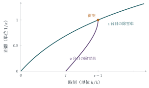

STEP III Specimen paper、第11問
先に進む前に問題を読んでおこう。問題は STEP Support Programme の問題データベースにある： step.maths.org/questions/spec-s3-q11
導入
雪が一定の割合で降り続いている。1台の除雪車が道路を走り出すが、出会う雪がしだいに深くなるので、だんだん遅くなっていく。少し遅れて2台目の除雪車が、除雪された道を追いかける。2台目が出会うのは1台目が通過した後に積もった雪だけであり、それはより浅いので、2台目はより速く進み、やがて追いつく。それはいつか。
これは、Ralph Agnew が1942年に発表した有名な問題の一変形であり、微分方程式（differential equation）の問題の中でも最もよく知られたものの一つになった。この問題の面白さは、2台目の除雪車の速さが1台目が各地点を通過した時刻に依存する点にある。そのため小問 (i) の解が小問 (ii) の方程式に入り込んでくる。そしてこの方程式は、時刻を距離の関数として表す、いわば「逆さま」に書いたときに最もうまく扱える。
取りかかる前に
1台目の除雪車は時刻 \(t\) に深さ \(h + kt\) の雪に出会う。その速さはいくらか。\(x\) を \(t\) の関数として求めるのと、\(t\) を \(x\) の関数として求めるのとでは、どちらが易しいか。
速さは \(\frac{\mathrm{d}x}{\mathrm{d}t} = \frac{k}{\alpha(h + kt)}\) である。これはきれいに変数分離（separation of variables）できる。逆数をとると \(\frac{\mathrm{d}t}{\mathrm{d}x} = \frac{\alpha(h + kt)}{k}\) となり、これは \(x\) の関数としての \(t\) についての単純な線形（linear）方程式である。1台目についてはどちらの方法でもよいが、2台目については逆さまの形が不可欠である。
順を追って解く
段階 1 1台目の除雪車
\(\frac{\mathrm{d}t}{\mathrm{d}x} = \alpha\bigl(\frac hk + t\bigr)\) より、量 \(\frac hk + t\) は \(x\) について指数関数的に増加する。すなわち \(\frac hk + t = Ce^{\alpha x}\) である。\(x = 0\) のとき \(t = 0\) であるから \(C = \frac hk\) となり、 \[t_1(x) = \frac hk\bigl(e^{\alpha x} - 1\bigr). \qed\] 1台目の除雪車は指数関数的に遅くなる。すなわち、等しい距離を進むのにかかる時間が指数関数的に増えていく。
段階 2 2台目の除雪車の方程式
2台目の除雪車は時刻 \(t\) に位置 \(y\) に到達する。そこでの雪の深さはいくらか。（1台目が通過した直後の深さはいくらだったか。）
1台目の除雪車は時刻 \(t_1(y)\) に位置 \(y\) の雪をすべて除去した。それ以降、雪は割合 \(k\) で積もったので、時刻 \(t\) における深さは \(z = k\bigl(t - t_1(y)\bigr)\) である。したがって2台目の除雪車の速さは \[\frac{\mathrm{d}y}{\mathrm{d}t} = \frac{k}{\alpha k\bigl(t - t_1(y)\bigr)} = \frac{1}{\alpha\bigl(t - t_1(y)\bigr)},\] であり、逆数をとると \[\frac1\alpha\frac{\mathrm{d}t}{\mathrm{d}y} = t - \frac hk\bigl(e^{\alpha y} - 1\bigr). \qed\]
段階 3 解く
これは \(t\) について線形である：\(\frac{\mathrm{d}t}{\mathrm{d}y} - \alpha t = -\frac{\alpha h}{k}(e^{\alpha y} - 1)\)。どのような積分因子（integrating factor）がうまくいくか。初期条件は何か。
\(e^{-\alpha y}\) を掛けると、 \[\frac{\mathrm{d}}{\mathrm{d}y}\bigl(te^{-\alpha y}\bigr) = -\frac{\alpha h}{k}\bigl(1 - e^{-\alpha y}\bigr), \qquad te^{-\alpha y} = -\frac{\alpha h}{k}y - \frac hke^{-\alpha y} + C.\] 2台目の除雪車は時刻 \(t = T\) に \(y = 0\) を出発するので \(T = -\frac hk + C\) であり、\(C = T + \frac hk\) を得る。両辺に \(e^{\alpha y}\) を掛け戻して整理すると、 \[t_2(y) = \frac hk\bigl(e^{\alpha y} - 1\bigr) + \Bigl(T - \frac{\alpha hy}{k}\Bigr)e^{\alpha y}. \qed\] （問題の指示どおり確かめるには、微分して代入すればよい。各項はまとまって \(\alpha\bigl(t - t_1(y)\bigr)\) となる。）
段階 4 衝突
2台の除雪車は、同じ時刻に同じ地点に達したときに衝突する。\(t_2(y)\) と \(t_1(y)\) を比較せよ。
差は \(t_2(y) - t_1(y) = \bigl(T - \frac{\alpha hy}{k}\bigr)e^{\alpha y}\) であり、これは位置 \(y\) における2台の除雪車の時間差である。これが0になるのは \[y = \frac{kT}{\alpha h}. \qed\] のときである。この地点で2台目の除雪車は1台目に追いつく。このとき2台目の前方の雪の深さは0であり、このモデルでは2台目の速さは無限大になる（図 11.13.1）。

振り返り
方程式を逆さまにする。 \(t\) を位置の関数とすると、どちらの方程式も線形になった。
一つの解が次の問題に入り込む。 1台目の除雪車の時刻表 \(t_1(y)\) が、2台目の除雪車の方程式に現れた。
二度解かずに比較する。 衝突の条件は差 \(t_2 - t_1\) から得られ、その差は単純な因数をもっていた。
背後にある数学
Agnew の除雪車
Ralph Palmer Agnew が1942年の教科書 Differential Equations で示した版では、ある朝、雪が激しく一定の割合で降り始める。正午に除雪車が出発し、最初の1時間で \(2\) マイル、次の1時間で \(1\) マイル進む。雪が降り始めたのはいつか。除雪車の速さは雪の深さに反比例し、深さは降り始めからの経過時間に比例する。答え（下の演習問題を参照）には黄金比（golden ratio）が関わり、雪が降り始めたのは正午の約 \(37\) 分前である。その後、この問題のように除雪車が2台登場する版が生まれた。
伝わっていく情報
2台目の除雪車の運動は、道路に記録された履歴、すなわち各地点が最後に除雪された時刻に依存する。これは記憶（memory）をもつ系の簡単な例であり、ある場所での状態が、以前そこで起こったことに依存する。交通流、氷河の運動、森林火災の広がりはいずれもこの性質をもち、その数学である一階偏微分方程式（first-order partial differential equation）とその特性曲線（characteristics）の理論は、大学2年次の標準的な話題である。時刻を位置の関数として書く（「波面はいつここに到達するか」）という発想は、まさにこうした問題に用いられる到達時刻（arrival times）の方法そのものである。
思考のスキル
微分方程式は、変数の役割を入れ替えるとずっと簡単になることがある。変化率が、ある場所で何かが起こった時刻に依存するのであれば、時刻を場所の関数として書け。
ここでは、どちらの方程式も \(t(y)\) について書くと線形になった。大学では、どの変数を独立変数（independent variable）とするかを選ぶ自由（そして都合のよいときにそれを変える自由）が、流体力学のホドグラフ法（hodograph method）から幾何学における弧長（arc length）をパラメータとして用いる手法まで、絶えず活用される。
次の一歩
Agnew の問題。 正午より前の未知の時刻に、雪が一定の割合で降り始める。速さが雪の深さに反比例する除雪車が正午に出発し、最初の1時間で \(2\) マイル、次の1時間で \(1\) マイル進む。雪が正午の \(t_0\) 時間前に降り始めたとすると \(\bigl(1 + \frac{2}{t_0}\bigr)^2 = \bigl(1 + \frac{1}{t_0}\bigr)^3\) が成り立つことを示し、\(\frac{1}{t_0}\) が黄金比であることを導き、雪が降り始めた時刻を求めよ。
確認。 \(t_2(y)\) が小問 (ii) の微分方程式を満たすことを、微分によって確かめよ。
時間差。 \(kT > h\) ならば、時間差 \(t_2(y) - t_1(y)\) は初めに増加し、その後減少して0になることを示し、それが最大になる位置を求めよ。\(kT \leq h\) のときはどうなるか。その意味を解釈せよ。
3台の除雪車。 3台目の除雪車が時刻 \(2T\) に出発する。その運動の方程式を書け。3台目が2台目に追いつくのは、2台目が1台目に追いつくより前か後か。
さらに学ぶために
Ralph Palmer Agnew, Differential Equations（McGraw-Hill, 1942）。除雪車問題の原典。
George Simmons, Differential Equations with Applications and Historical Notes（CRC Press）。数多くの問題とともに除雪車問題を論じている。
Richard Haberman, Mathematical Models（SIAM）。交通流と特性曲線を、取り組みやすい水準で扱っている。